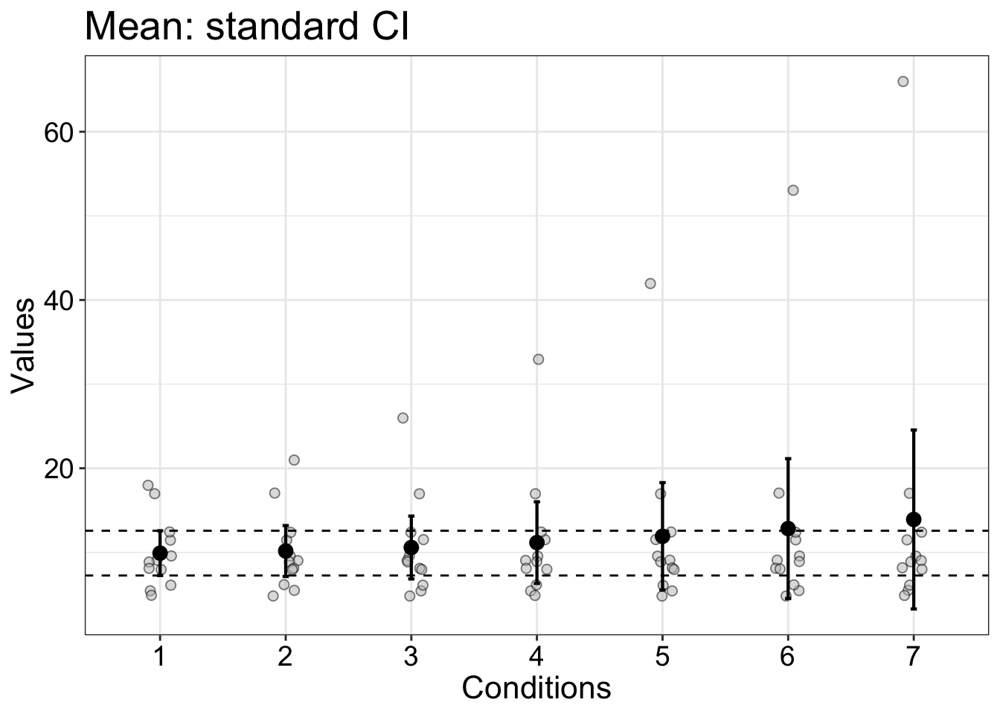

Notebook 2: The percentile bootstrap
Dependencies
library(tibble)
library(ggplot2)
source("./code/yuen.txt")
source("./code/onesampb.txt") # one-sample percentile bootstrap confidence interval
source("./code/pb2gen.txt") # two-sample percentile bootstrap confidence interval
source("./code/theme_gar.txt") # format ggplot2 figuresT-test
Built-in function
n <- 20
x <- rlnorm(n)
t.test(x)##
## One Sample t-test
##
## data: x
## t = 6.9578, df = 19, p-value = 1.248e-06
## alternative hypothesis: true mean is not equal to 0
## 95 percent confidence interval:
## 1.598099 2.973226
## sample estimates:
## mean of x
## 2.285662# help(t.test)Confidence interval intereactive demo: https://seeing-theory.brown.edu/frequentist-inference/index.html#section2
Rand Wilcox’s function for trimmed means
tr <- 0 # amount of trimming - 0 = mean
trimci(x, tr = tr)## [1] "The p-value returned by this function is based on the"
## [1] "null value specified by the argument null.value, which defaults to 0"
## [1] "To get a measure of effect size using a Winsorized measure of scale, use trimciv2"## $ci
## [1] 1.598099 2.973226
##
## $estimate
## [1] 2.285662
##
## $test.stat
## [1] 6.957827
##
## $se
## [1] 0.3285023
##
## $p.value
## [1] 1.247784e-06
##
## $n
## [1] 20# edit(trimci)Bootstrap implementation
We start by looking at how the bootstrap is implemented in the one-sample case. See an interactive demo here. The core mechanism of the bootstrap is sampling with replacement, which is equivalent to simulating experiments using only the data at hand.
Sampling with replacement
Let’s say we have a sample that is a sequence of integers, from 1 to 6.
n <- 6 # sample size
samp <- 1:n
samp## [1] 1 2 3 4 5 6To make bootstrap inferences, we sample with replacement from that sequence using the sample() function. That’s the engine under the hood of any bootstrap technique. Let’s generate our first bootstrap sample:
set.seed(21) # for reproducible results
sample(samp, size = n, replace = TRUE) # sample with replacement## [1] 5 2 5 2 6 6We do it again, getting a different bootstrap sample:
sample(samp, size = n, replace = TRUE) # sample with replacement## [1] 1 2 6 6 5 6Third time:
sample(samp, size = n, replace = TRUE) # sample with replacement## [1] 1 4 2 1 4 2We could also generate our 3 bootstrap samples in one go:
set.seed(21) # reproducible example
nboot <- 3
matrix(sample(samp, size = n*nboot, replace = TRUE), nrow = nboot, byrow = TRUE)## [,1] [,2] [,3] [,4] [,5] [,6]
## [1,] 5 2 5 2 6 6
## [2,] 1 2 6 6 5 6
## [3,] 1 4 2 1 4 2As is apparent from these 3 examples, in a bootstrap sample, some observations are sampled more than once and others are not sampled at all. So each bootstrap sample is like a virtual experiment in which we draw random observations from our original sample.
Bootstrap mean estimates
How do we use the bootstrap samples? It might be tempting to use them to make inferences about the mean of our sample (as we will see below this is a bad idea). With the bootstrap, we ask: what are the plausible sample means compatible with our data, without making any parametric assumptions? To answer this question, we take bootstrap samples by sampling with replacement from the data. For each bootstrap sample, we compute the mean. This can be done using a for loop. Although for loops can be avoided, they are very practical in many situations and they make the code easier to read.
Loop
set.seed(21) # reproducible results
nboot <- 1000 # number of bootstrap samples
# declare vector of results
boot.m <- vector(mode = "numeric", length = nboot)
for(B in 1:nboot){
boot.samp <- sample(samp, size = n, replace = TRUE) # sample with replacement
boot.m[B] <- mean(boot.samp) # save bootstrap means
}Same in one line of code
set.seed(21)
boot.m <- apply(matrix(sample(samp, size = n*nboot, replace = TRUE), nrow = nboot), 1, mean)Illustrate bootstrap samples
The lollipop chart shown below illustrates the first 50 bootstrap means, in the order in which they were sampled. The grey horizontal line marks the sample mean (3.5). The bootstrap means randomly fluctuate around the sample mean. They represent the means we could expect if we were to repeat the same experiment many times, given that we can only sample from the data at hand.
n.show <- 50 # show only n first bootstrap means
df <- tibble(x = 1:n.show, y = boot.m[1:n.show])
ggplot(df, aes(x = x, y = y)) + theme_gar +
geom_hline(yintercept = mean(samp), colour = "grey", size = 1) +
geom_segment(aes(x=x, xend=x, y=0, yend=y)) +
geom_point(size=2.5, color="red", fill=alpha("orange", 0.3), alpha=0.7, shape=21, stroke=2) +
scale_x_continuous(breaks = c(1, seq(10, 100, 10))) +
scale_y_continuous(breaks = seq(1, 6, 1)) +
coord_cartesian(ylim = c(0, 6)) +
labs(x = "Bootstrap samples", y = "Bootstrap means")# ggsave(filename=('./figures/figure_50bootsamp.pdf'),width=7,height=5)
# ggsave(filename=('./figures/figure_50bootsamp.png'),width=7,height=5)Density plot
We can illustrate all the bootstrap means using a density plot, which is like a smooth histogram. The density plot shows the relative probability of observing different bootstrap means.
df <- as_tibble(with(density(boot.m),data.frame(x,y)))
ggplot(df, aes(x = x, y = y)) + theme_gar +
geom_vline(xintercept = mean(samp), colour = "grey", size = 1) +
geom_line(size = 2) +
scale_x_continuous(breaks = seq(0, 10, 1)) +
coord_cartesian(xlim = c(0, 6)) +
labs(x = "Bootstrap means", y = "Density")# ggsave(filename=('./figures/figure_bootdens.pdf'),width=7,height=5)
# ggsave(filename=('./figures/figure_bootdens.png'),width=7,height=5)Confidence interval
Formula
We set alpha to 0.05 to get a 95% confidence interval. That means, if we were to repeat the same experiment many times, and for each experiment we compute a confidence interval, in the long-run, 95% of these intervals should contain the population value. This means that for a given experiment, the confidence interval does or does not contain the population we’re trying to estimate. Also, the actual coverage depends on the method used to build the confidence interval and the quantity we’re trying to estimate. In particular, it is well-known that the bootstrap should be used to build confidence intervals for the mean, because the coverage can be far from the expected value. For instance, when sampling from skewed distributions, the coverage can be much lower than the expected 95%. See next main section on how to use a simulation to check coverage.
alpha <- 0.05
ci <- quantile(boot.m, probs = c(alpha/2, 1-alpha/2)) # [2.33, 4.84]There are many ways to estimate quantiles (the R function quantile() has 9 options for instance). In Rand Wilcox’s functions, the procedure in the next chunk is used, which gives slightly different results. With a large number of bootstrap samples, which quantile method is used will make little difference.
alpha <- 0.05
bvec <- sort(boot.m) # sort bootstrap means in ascending order
# define quantiles
low <- round((alpha/2)*nboot) # 25
up <- nboot-low # 975
low <- low+1
# get confidence interval
ci <- c(bvec[low],bvec[up]) # [2.33, 4.83]Graphical representation
The horizontal line marks the 95% confidence interval. The boxes report the values of the CI bounds. L stands for lower bound, U for upper bound.
df <- as_tibble(with(density(boot.m),data.frame(x,y)))
ggplot(df, aes(x = x, y = y)) + theme_gar +
geom_vline(xintercept = mean(samp), colour = "grey", size = 1) +
geom_line(size = 2) +
scale_x_continuous(breaks = seq(0, 10, 1)) +
coord_cartesian(xlim = c(0, 6)) +
labs(x = "Bootstrap means", y = "Density") +
# confidence interval ----------------------
geom_segment(x = ci[1], xend = ci[2],
y = 0, yend = 0,
lineend = "round", size = 3, colour = "orange") +
annotate(geom = "label", x = ci[1]+0.15, y = 0.1*max(df$y), size = 7,
colour = "white", fill = "orange", fontface = "bold",
label = paste("L = ", round(ci[1], digits = 2))) +
annotate(geom = "label", x = ci[2]-0.15, y = 0.1*max(df$y), size = 7,
colour = "white", fill = "orange", fontface = "bold",
label = paste("U = ", round(ci[2], digits = 2)))# ggsave(filename=('./figures/figure_bootdensci.pdf'),width=7,height=5)P value
nv <- 2 # null value for hypothesis testing
pv <- mean(boot.m>nv) +.5*mean(boot.m==nv)
pv <- 2*min(c(pv,1-pv)) # P value = 0.015Summary figure
Make data frame
df <- as_tibble(with(density(boot.m),data.frame(x,y)))
df.pv1 <- tibble(x = df$x[df$x<nv],
y = df$y[df$x<nv])
df.pv2 <- tibble(x = df$x[df$x>nv],
y = df$y[df$x>nv])Make figure
ggplot(df, aes(x = x, y = y)) + theme_gar +
geom_vline(xintercept = mean(samp), colour = "grey", size = 1) +
# P value
geom_area(data = df.pv1,
aes(x = x, y = y),
fill = "red", alpha = 1) +
geom_area(data = df.pv2,
aes(x = x, y = y),
fill = "red", alpha = .2) +
# density
geom_line(data = df, size = 2) +
scale_x_continuous(breaks = seq(0, 10, 1)) +
coord_cartesian(xlim = c(0, 6)) +
labs(x = "Bootstrap means", y = "Density") +
# Null value
geom_segment(x = nv,
xend = nv,
y = 0,
yend = df$y[which.min(abs(df$x-nv))],
size = 1,
colour = "black",
linetype = "dotted") +
# P value arrow -------------
geom_segment(x = 1.4, xend = 1.9, y = 0.1, yend = 0.01,
arrow = arrow(type = "closed",
length = unit(0.25, "cm")),
colour = "grey50", size = 1) +
annotate(geom = "label", x = 1, y = 0.1, size = 7,
colour = "white", fill = "red", fontface = "bold",
label = "P value / 2")# ggsave(filename=('./figures/figure_bootdenspval.pdf'),width=7,height=5)You can get the bootstrap confidence interval and P value by calling the onesampb() function:
set.seed(21)
onesampb(samp,est=mean,alpha=.05,nboot=1000,SEED=FALSE,nv=2)## $ci
## [1] 2.333333 4.833333
##
## $n
## [1] 6
##
## $estimate
## [1] 3.5
##
## $p.value
## [1] 0.015It can be used with any estimator, define with the est argument, for the median (median), a trimmed mean (tm), a quantile estimate (hd) or some measure of variability, such as the median absolute deviation to the median (mad).
Set SEED to TRUE to get the same results every time you use the function. Set it to FALSE to use difference random bootstrap samples, so the function returns different results every time you use it. nv is the null value used in computing the P value.
Bootstrap P value
Intuitively, the bootstrap P value reflects how deeply the null hypothesis is nested within the bootstrap distribution. Let’s illustrate that.
Panel A
nv <- 3.5
pv <- mean(boot.m>nv) +.5*mean(boot.m==nv)
pv <- 2*min(c(pv,1-pv)) # P value = 0.015
p <- ggplot(df, aes(x = x, y = y)) + theme_gar +
# density
geom_line(data = df, size = 2) +
scale_x_continuous(breaks = seq(0, 10, 1)) +
coord_cartesian(xlim = c(0, 6)) +
labs(x = "Bootstrap means", y = "Density") +
# Null value
geom_vline(xintercept = nv) +
ggtitle(paste0("Null value = ",nv,", P value = ",pv))
p# pA <- p
# save figure
# ggsave(filename = "./figures/nb2_fig_pvalA.pdf", width = 20, height = 15, units = "cm")Panel B
nv <- 4.5
pv <- mean(boot.m>nv) +.5*mean(boot.m==nv)
pv <- 2*min(c(pv,1-pv)) # P value = 0.015
p <- ggplot(df, aes(x = x, y = y)) + theme_gar +
# density
geom_line(data = df, size = 2) +
scale_x_continuous(breaks = seq(0, 10, 1)) +
coord_cartesian(xlim = c(0, 6)) +
labs(x = "Bootstrap means", y = "Density") +
# Null value
geom_vline(xintercept = nv) +
ggtitle(paste0("Null value = ",nv,", P value = ",pv))
p# pB <- p
# save figure
# ggsave(filename = "./figures/nb2_fig_pvalB.pdf", width = 20, height = 15, units = "cm")Panel C
nv <- 5.5
pv <- mean(boot.m>nv) +.5*mean(boot.m==nv)
pv <- 2*min(c(pv,1-pv)) # P value = 0.015
p <- ggplot(df, aes(x = x, y = y)) + theme_gar +
# density
geom_line(data = df, size = 2) +
scale_x_continuous(breaks = seq(0, 10, 1)) +
coord_cartesian(xlim = c(0, 6)) +
labs(x = "Bootstrap means", y = "Density") +
# Null value
geom_vline(xintercept = nv) +
ggtitle(paste0("Null value = ",nv,", P value = ",pv))
p# pC <- p
# save figure
# ggsave(filename = "./figures/nb2_fig_pvalC.pdf", width = 20, height = 15, units = "cm")Panel D
nv <- 6
pv <- mean(boot.m>nv) +.5*mean(boot.m==nv)
pv <- 2*min(c(pv,1-pv)) # P value = 0.015
p <- ggplot(df, aes(x = x, y = y)) + theme_gar +
# density
geom_line(data = df, size = 2) +
scale_x_continuous(breaks = seq(0, 10, 1)) +
coord_cartesian(xlim = c(0, 6)) +
labs(x = "Bootstrap means", y = "Density") +
# Null value
geom_vline(xintercept = nv) +
ggtitle(paste0("Null value = ",nv,", P value = ",pv))
p# pD <- p
# save figure
# ggsave(filename = "./figures/nb2_fig_pvalD.pdf", width = 20, height = 15, units = "cm")The bootstrap is not robust
The bootstrap is sometimes described as a robust technique. In itself, it is not robust. A simple example can illustrate this lack of robustness: percentile bootstrap confidence intervals for the mean are not robust.
Generate data and compute confidence intervals
set.seed(21) # reproducible results
n <- 10
samp <- rnorm(n, 8, 2)
samp <- c(samp, 17)
samp_mat <- matrix(NA, nrow = 12, ncol = 7)
ci_mean_t <- matrix(NA, nrow = 2, ncol = 7)
mean_res <- vector(mode = "numeric", length = 7)
median_res <- vector(mode = "numeric", length = 7)
ci_mean_pb <- matrix(NA, nrow = 2, ncol = 7)
ci_median_pb <- matrix(NA, nrow = 2, ncol = 7)
ci_median_param <- matrix(NA, nrow = 2, ncol = 7)
for(C in 1:7){
todo <- c(samp, 17+C^2)
samp_mat[,C] <- todo
mean_res[C] <- mean(todo)
median_res[C] <- median(todo)
ci_mean_t[,C] <- t.test(todo)$conf.int
ci_mean_pb[,C] <- onesampb(todo, mean)$ci # default to nboot = 2000
}Illustrate results: mean + standard CI
set.seed(777) # for reproducible jitter
# raw data
df <- tibble(res = as.vector(samp_mat),
cond = factor(rep(1:7, each = 12)))
# mean + confidence intervals
df2 <- tibble(res = mean_res,
cond = factor(1:7),
ci_low = ci_mean_t[1,],
ci_up = ci_mean_t[2,])
ggplot(df, aes(x = cond, y = res)) + theme_gar +
# scatterplots
geom_jitter(shape = 21, width = .1, colour = 'black', fill = 'grey', size = 2, alpha = 0.5) +
geom_hline(yintercept = ci_mean_t[1,1], linetype = 'dashed') +
geom_hline(yintercept = ci_mean_t[2,1], linetype = 'dashed') +
# confidence intervals
geom_errorbar(data = df2, aes(x=cond, ymin=ci_low, ymax=ci_up),
width=.05, size=0.75) +
geom_point(data = df2, aes(x=cond, y=res), size=3) +
theme(panel.grid.minor.x = element_blank()) +
labs(x = "Conditions", y = "Values") +
ggtitle("Mean: standard CI") 
# save figure
# ggsave(filename = "./figures/nb2_fig_outliers_m_ci.pdf", width = 20, height = 15, units = "cm")Illustrate results: mean + boot CI
set.seed(777) # for reproducible jitter
# raw data
df <- tibble(res = as.vector(samp_mat),
cond = factor(rep(1:7, each = 12)))
# mean + confidence intervals
df2 <- tibble(res = mean_res,
cond = factor(1:7),
ci_low = ci_mean_pb[1,],
ci_up = ci_mean_pb[2,])
ggplot(df, aes(x = cond, y = res)) + theme_gar +
# scatterplots
geom_jitter(shape = 21, width = .1, colour = 'black', fill = 'grey', size = 2, alpha = 0.5) +
geom_hline(yintercept = ci_mean_pb[1,1], linetype = 'dashed') +
geom_hline(yintercept = ci_mean_pb[2,1], linetype = 'dashed') +
# confidence intervals
geom_errorbar(data = df2, aes(x=cond, ymin=ci_low, ymax=ci_up),
width=.05, size=0.75) +
geom_point(data = df2, aes(x=cond, y=res), size=3) +
theme(panel.grid.minor.x = element_blank()) +
labs(x = "Conditions", y = "Values") +
ggtitle("Mean: bootstrap CI") # save figure
# ggsave(filename = "./figures/nb2_fig_outliers_m_pbci.pdf", width = 20, height = 15, units = "cm")Compare 2 groups: difference in location
Inferences on 20% trimmed means of skewed distributions.
Make data
We sample from log-normal distributions to mimic distributions of response times.
set.seed(44) # reproducible results
# Group 1
n1 <- 50
m <- 400
s <- 50
location <- log(m^2 / sqrt(s^2 + m^2))
shape <- sqrt(log(1 + (s^2 / m^2)))
g1 <- rlnorm(n1, location, shape)
# Group 2
n2 <- 70
m <- 500
s <- 70
location <- log(m^2 / sqrt(s^2 + m^2))
shape <- sqrt(log(1 + (s^2 / m^2)))
g2 <- rlnorm(n2, location, shape)Illustrate 2 groups
set.seed(22) # for reproducible jitter
# raw data
df <- tibble(val = c(g1, g2),
y = rep(1, n1+n2),
gp = factor(c(rep("Group 1",n1),rep("Group 2",n2)))
)
df.q1 <- tibble(y = rep(0.9,2),
yend = rep(1.1,2),
x = c(quantile(g1,0.25), quantile(g2, 0.25)),
xend = x,
gp = factor(c("Group 1","Group 2"))
)
df.q2 <- tibble(y = rep(0.9,2),
yend = rep(1.1,2),
x = c(quantile(g1,0.5), quantile(g2, 0.5)),
xend = x,
gp = factor(c("Group 1","Group 2"))
)
df.q3 <- tibble(y = rep(0.9,2),
yend = rep(1.1,2),
x = c(quantile(g1,0.75), quantile(g2, 0.75)),
xend = x,
gp = factor(c("Group 1","Group 2"))
)
p <- ggplot(data = df, aes(x = val, y = y)) + theme_gar +
# scatterplots
geom_jitter(height = .05, alpha = 0.3, size = 3) + # shape = 21, fill = "grey", colour = "black"
theme(axis.ticks.y = element_blank(),
axis.text.y = element_blank(),
axis.title.y = element_blank(),
panel.grid.minor.x = element_blank()) +
scale_y_continuous(breaks = 1) +
# 1st quartile
geom_segment(data = df.q1, aes(y = y, yend = yend,
x = x, xend = xend),
size = 0.75, lineend = 'round', colour = "black") +
# median
geom_segment(data = df.q2, aes(y = y, yend = yend,
x = x, xend = xend),
size = 0.75, lineend = 'round', colour = "black") +
# 3rd quartile
geom_segment(data = df.q3, aes(y = y, yend = yend,
x = x, xend = xend),
size = 0.75, lineend = 'round', colour = "black") +
labs(x = "Response times (ms)") +
facet_grid(cols = vars(gp)) +
coord_cartesian(xlim = c(0, 700)) +
scale_x_continuous(breaks = seq(0, 1000, 100))
p# ggsave(filename=('./figures/nb2_fig_2gps.pdf'),width=7,height=2.5)Bootstrap
set.seed(1)
nboot <- 1000
# bootstrap sampling independently from each group
boot1 <- matrix(sample(g1, size=n1*nboot, replace=TRUE), nrow=nboot)
boot2 <- matrix(sample(g2, size=n2*nboot, replace=TRUE), nrow=nboot)
# compute trimmed mean for each group and bootstrap sample
boot1.tm <- apply(boot1, 1, mean, trim=0.2)
boot2.tm <- apply(boot2, 1, mean, trim=0.2)
# get distribution of sorted bootstrap differences
boot.diff <- sort(boot1.tm - boot2.tm)Bootstrap confidence interval - as implemented in pb2gen
alpha <- 0.05
low <- round((alpha/2)*nboot) + 1
up <- nboot - low
ci <- c(boot.diff[low], boot.diff[up])Bootstrap confidence interval - using the quantile function
alpha <- 0.05
ci <- quantile(boot.diff, probs = c(alpha/2, 1-alpha/2)) # [-114.2, -66.1]Bootstrap P value
nv <- 0 # null value
pv <- sum(boot.diff<nv)/nboot + sum(boot.diff==nv)/(2*nboot)
pv <- 2*(min(pv,1-pv)) # 0Function
set.seed(1)
pb2gen(g1, g2, alpha=0.05, nboot=1000, est=mean, SEED=FALSE, trim=0.2)## $est.1
## [1] 393.8316
##
## $est.2
## [1] 485.0868
##
## $est.dif
## [1] -91.25519
##
## $ci
## [1] -114.17024 -66.27289
##
## $p.value
## [1] 0
##
## $sq.se
## [1] 146.3022
##
## $n1
## [1] 50
##
## $n2
## [1] 70Illustration
diff <- mean(g1,trim=0.2) - mean(g2,trim=0.2) # group difference
ci1 <- round(ci[1])
ci2 <- round(ci[2])
df <- as_tibble(with(density(boot.diff),data.frame(x,y)))
ggplot(df, aes(x = x, y = y)) + theme_gar +
geom_vline(xintercept = diff, colour = "grey", size = 1) +
geom_line(size = 2) +
scale_x_continuous(breaks = seq(-200, 200, 20)) +
coord_cartesian(xlim = c(-130, 0)) +
labs(x = "Bootstrap differences between 20% trimmed means", y = "Density") +
# confidence interval ----------------------
geom_segment(x = ci1, xend = ci2,
y = 0, yend = 0,
lineend = "round", size = 3, colour = "orange") +
annotate(geom = "label", x = ci1+0.15, y = 0.1*max(df$y), size = 7,
colour = "white", fill = "orange", fontface = "bold",
label = paste("L = ", round(ci1, digits = 2))) +
annotate(geom = "label", x = ci2-0.15, y = 0.1*max(df$y), size = 7,
colour = "white", fill = "orange", fontface = "bold",
label = paste("U = ", round(ci2, digits = 2)))# ggsave(filename=('./figures/nb2_fig_2gpsbootres.pdf'),width=7,height=5)Compare 2 groups: difference in spread
Using the same data, now we look at differences in spread between group 1 and group 2. We make inferences on MAD, the median absolute deviation from the median, which is a robust measure of spread (more on robust estimation in lecture 3).
Bootstrap
We already have generated bootstrap samples, so here we simply compute MAD for each of them.
boot1.mad <- apply(boot1, 1, mad)
boot2.mad <- apply(boot2, 1, mad)
boot.diff <- sort(boot1.mad - boot2.mad)Bootstrap confidence interval
ci <- c(boot.diff[low], boot.diff[up]) # [-59.1, 3.9]Bootstrap confidence interval - quantile method
ci <- quantile(boot.diff, probs = c(alpha/2, 1-alpha/2)) # [-59.15, 5.12]Bootstrap P value
pv <- sum(boot.diff<0)/nboot + sum(boot.diff==0)/(2*nboot)
pv <- 2*(min(pv,1-pv)) # 0.084Illustration
diff <- mad(g1) - mad(g2) # group difference
ci1 <- round(ci[1])
ci2 <- round(ci[2])
df <- as_tibble(with(density(boot.diff),data.frame(x,y)))
ggplot(df, aes(x = x, y = y)) + theme_gar +
geom_vline(xintercept = diff, colour = "grey", size = 1) +
geom_line(size = 2) +
scale_x_continuous(breaks = seq(-200, 200, 20)) +
coord_cartesian(xlim = c(-100, 50)) +
labs(x = "Bootstrap differences between MADs", y = "Density") +
# confidence interval ----------------------
geom_segment(x = ci1, xend = ci2,
y = 0, yend = 0,
lineend = "round", size = 3, colour = "orange") +
annotate(geom = "label", x = ci1+0.15, y = 0.1*max(df$y), size = 7,
colour = "white", fill = "orange", fontface = "bold",
label = paste("L = ", round(ci1, digits = 2))) +
annotate(geom = "label", x = ci2-0.15, y = 0.1*max(df$y), size = 7,
colour = "white", fill = "orange", fontface = "bold",
label = paste("U = ", round(ci2, digits = 2)))
# ggsave(filename=('./figures/nb2_fig_mad.pdf'),width=7,height=5)Function
set.seed(1)
pb2gen(g1, g2, alpha=0.05, nboot=1000, est=mad, SEED=FALSE)## $est.1
## [1] 40.29569
##
## $est.2
## [1] 68.39412
##
## $est.dif
## [1] -28.09842
##
## $ci
## [1] -59.149360 3.897791
##
## $p.value
## [1] 0.084
##
## $sq.se
## [1] 263.3807
##
## $n1
## [1] 50
##
## $n2
## [1] 70Instead of looking separately at group differences in central tendency and spread, you can have a more detailed look at how distributions differ by using a shift function, which is available in the rogme R package. More on this later on in the course.
Guillaume A. Rousselet, 2019, University of Glasgow.